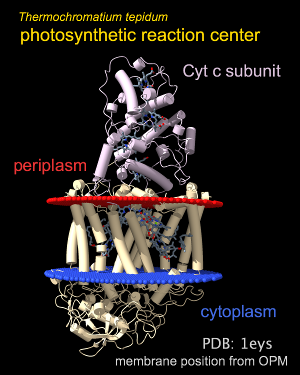

|  |
| Get this session... |
The 2dlabels command adds text, symbols,
and straight arrows to the display for presentation-quality images and movies.
These 2D labels exist in the X,Y plane of the screen and do not move
along with the 3D scene, but can be repositioned by
dragging with the move label
mouse mode
 .
A 2D arrow can be dragged at either end.
2D labels (including arrows) can also be faded in and out or repositioned
over a specified number of frames for animation purposes.
.
A 2D arrow can be dragged at either end.
2D labels (including arrows) can also be faded in and out or repositioned
over a specified number of frames for animation purposes.
For “3D” labels that move along with the associated atoms,
see the label command.
The move label mouse mode
 works for both 2D labels and 3D labels.
Dragging a 2D label echoes the corresponding command with X and Y positions
to the Log, which may be useful
for scripting.
2D labels are models that can be acted on by general commands such as
close,
show/hide, and
color.
See also:
save,
movie,
scalebar,
key,
making images,
making movies
works for both 2D labels and 3D labels.
Dragging a 2D label echoes the corresponding command with X and Y positions
to the Log, which may be useful
for scripting.
2D labels are models that can be acted on by general commands such as
close,
show/hide, and
color.
See also:
save,
movie,
scalebar,
key,
making images,
making movies
Example command script:
open 1bfp; turn z 90; turn y 10
preset pub; windowsize 600 400
2dlab text 'Blue Fluorescent Protein' color light sea green size 26 x .03 y .92; wait 60
2dlab #2 ypos .03 size 40 frames 60; wait 120
2dlab #2 text "here's an arrow"
2d arrow start .5,.075 end .9,.2 color red; wait 120
2dlab #2 text 'Fading...' vis f frames 100; 2d arrow #3 vis f frames 100; wait 100
See also the G-Protein Switch Regions example image and script.
The command 2dlabels listfonts lists the available font names in the Log.
Usage: 2dlabels text label-contents [ color color-spec | default ] [ bgColor color-spec | none ] [ margin rectangle-padding ] [ outline rectangle-outline-width ] [ size font-size ] [ xpos x-position ] [ ypos y-position ] [ font font-name ] [ bold true | false ] [ italic true | false ] [ visibility true | false ]The text argument is required to create a new 2D label. The 2D label is added as a new model, and the resulting model ID number (or the word all to indicate all 2D labels) can be used to specify it for subsequent changes or deletion. The text label-contents may include letters, numbers, and symbols. A few symbols are available from the keyboard, and many others can be copied and pasted into the command line from various sources (such as this page) or indicated with unicode character codes or character names, as in the following examples:
The label can be shown over a rectangular background of another color given with the bgColor option (default none, no background). If the label color is specified as default or auto, it will automatically adjust to white or black depending on the color of the label background, or if there is no label background, depending on the color of the window background. The colored rectangle will extend beyond the text in each direction by a margin of rectangle-padding pixels (default 9) and an additional outline in white for dark rectangle colors or black for light rectangle colors will be drawn around the rectangle if rectangle-outline-width > 0 is specified (default 0, no outline).
The label size must be an integer greater than zero (default 24). The xpos and ypos options specify the X and Y coordinates of the lower lefthand corner of the label (defaults are 0.5 and 0.5). The X axis is horizontal and the Y axis is vertical, and both range from 0 to 1 in the visible portion of the graphics window. It is possible to place a label partially or completely outside the visible area, however. The available font settings (default Arial) can be listed with 2dlabels listfonts. Font names with spaces must be enclosed in quotation marks. In addition, the font can be designated as italic and/or bold. The visibility option specifies whether the label should be displayed.
Usage: 2dlabels [ 2dlabel-spec | all ] [ text label-contents ] [ color color-spec ] [ bgColor color-spec | none ] [ margin rectangle-padding ] [ outline rectangle-outline-width ] [ size font-size ] [ xpos x-position ] [ ypos y-position ] [ font font-name ] [ bold true | false ] [ italic true | false ] [ visibility true | false ] [ frames N ]
The 2D label(s) to change are specified by model number or the word all to specify all 2D labels collectively. A blank specification also means “all” unless the text option is used, which would create a new 2D label as described above. All other options besides frames are as described above, except that the defaults are to leave the current label unchanged. The frames option allows making certain types of changes gradually over N frames, such as fading labels in or out (changing visibility); it does not apply to changes in the text, font, bold, or italic options, which will occur immediately. Changing bgColor to none from a color will also occur abruptly, but backgrounds can be faded in/out by specifying a transparent color instead of none.
Usage: 2dlabels arrow start x1,y1 end x2,y2 [ color color-spec ] [ weight weight ] [ headStyle blocky | solid | pointy | pointer ] [ visibility hide | show ]
The start and end arguments are required to create a new 2D arrow. The arrow is added as a new model, and the resulting model ID number (or the word all to indicate all 2D arrows) can be used to specify it for subsequent changes or deletion. The start and end arguments specify the the start and end (tip) locations of the arrow in the X,Y plane, where the X axis is horizontal and the Y axis is vertical, and both range from 0 to 1 in the visible portion of the window. The X and Y coordinates should be separated by a comma only (no spaces). If the color is specified as default (or the color option is not used), the arrow color will automatically adjust to white or black depending on the window background color. The weight option gives a scale factor for the overall thickness of the arrow (default 1.0) . The headStyle option specifies arrowhead style (default solid). The visibility option specifies whether the arrow should be displayed.
Usage: 2dlabels arrow [ 2dlabel-spec | all ] [ start x1,y1 ] [ end x2,y2 ] [ color color-spec ] [ weight weight ] [ headStyle blocky | solid | pointy | pointer ] [ visibility hide | show ] [ frames N ]
The 2D arrow(s) to change are specified by model number or the word all to specify all 2D arrows collectively. A blank specification also means “all” unless start and end values are given, which would create a new 2D arrow as described above. All other options besides frames are as described above, except that the defaults are to leave the current arrow unchanged. The frames option allows making certain types of changes gradually over N frames, such as fading in or out (changing visibility).
Usage: ( 2dlabels delete | ~2dlabels) [ 2dlabel-spec | all ]
The 2dlabels delete or ~2dlabels command removes 2D labels and arrows. Which 2D label(s) and arrows to delete can be specified by model number, or a blank specification or the word all to indicate all 2D labels and arrows collectively. Alternatively, the models can be closed with the close command.
{kind=link}